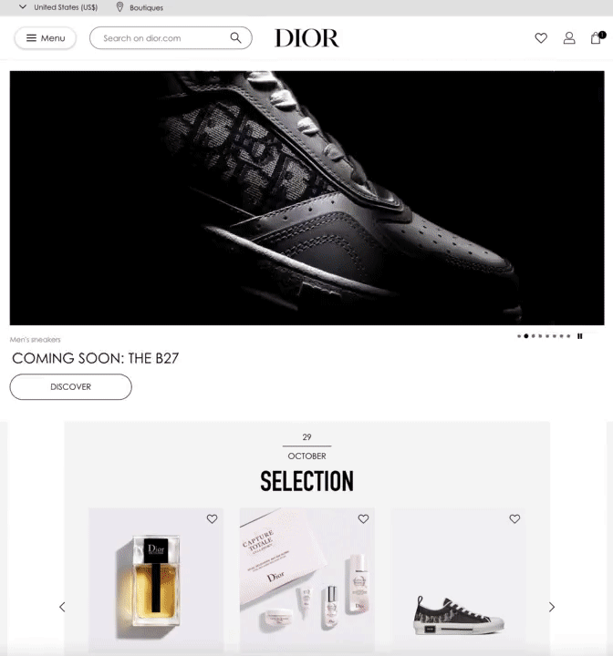

Blog posts
Balenciaga created a video game for their Spring/Summer 2021 presentation

Due to covid-19 being in full swing the big brands had to think long and hard about what exactly they should do for their Spring/Summer 2021 collections. Here are the highlights:
• Prada did a “livestream” of their fashion show which ended with a Q&A with Rick Owens and Miuccia Prada. Prada’s show didn’t look like a real livestream at all, more like a high production recording that took a whole day to film. We don’t mind though, no point having a “live” livestream really.
• Burberry cleverly partnered with Twitch for their livestream
• Jacquemus had a socially distanced show in a wheat field and livestreamed it
• Gucci hosted their own fashion week called “GucciFest” collaborating with Gus Van Sant on their 7 part video series. Our attention span didn’t make it past the first episode unfortunately.
• Chanel had their show in a castle and they only had one guest watching the show: Kristen Stewart. Weeeeeeiiiird. We hope she tested negative...
• Acne Studios did a classic livestream at the empty Grand Palais
• Balenciaga on the other hand went all in and created an online videogame dedicated to their new collection - it’s something we would only expect from Demna Gvasalia.
fashionweb review: DIOR.com
Miss "default template" Dior
We are continuing to review fashion websites, next up is Dior. Another big player that has been amongst the more reluctant to sell their luxury goods online, but they are waking up to the fact that The Times They Are A-Changin’.
Dior products have been too exclusive for E-commerce...until 2018
They only launched their e-commerce site in the US in 2018, then in Japan and China in 2019. Very very late.
They finally managed to hire a chief digital officer who rightfully said “It was a shame not to be present in one of the biggest markets for online luxury fashion before now [the US], but we had to make sure that the offer was right and the service perfect” bla bla, it is a shame for such a big brand to not have thought about e-commerce for such a long time and there is no excuse for that. However it’s good to see that they finally understand the importance of this and making changes to their digital strategy. Considering so many nations are going into second lockdown due to covid-19, all the luxury execs must regret for not investing in their e-commerce earlier while their retail stores on the Champs-Élysées are going to be closed and empty for the coming months. This is just another reminder that luxury has not set their priorities correctly between brick and mortar and the e-commerce before covid-19 happened and now we might see a few headless chicken running around.
Continue reading...fashionweb review: PRADA.com
prada.com: a baby website for a century old-luxury brand
Our website review series will commence with Prada.com. The Italian fashion house has been amongst the big brands who have been lagging behind with their digital transformation: they started selling on Net-A-Porter/Mr Porter in 2016, and they only entered e-commerce in China at the end of 2017. They are waking up to the realisation that people want to shop online.

A six-year-long awakening
When Prada’s CEO Patrizio Bertelli was asked in 2014 ‘why not e-commerce’, he responded that he has “more important things to do, like opening stores, for example.” It took the 74-year-old CEO two years before he admitted in a strange way in 2016 that “E-commerce was very American and now it’s moving also to Europe and very strongly in China.”
Three more years pass and in March 2019, Prada reported a 17.6 percent decline in net profits and posted a 10 percent fall in operating profit of €324M. Perhaps Patrizio Bertelli has been finally enlightened by now that shopping online is not something only Americans like doing and hopefully he understands the importance of expanding into e-commerce.
It seems like over these years he got the memo, since Prada has redesigned their website at the end of 2019 and promised to roll out their new e-commerce platform to more markets by 2020. Let’s dig deeper into their website here on fashionweb.io
Continue reading...You think Fashion E-commerce is big? Well, it's just the beginning.
With Covid-19, Microsoft bragged about Teams user acquisition being “2 years of digital transformation in 2 months”. Well, for fashion, it is rather an opportunity to catch up with 10 years of e-commerce being behind with other industries. But the exploration of this potential is still shy; a lot has happened with social media for customer acquisition, but little has been achieved when it comes to online products [products being websites--not clothes]. This blog is dedicated to this fun quest.
A lot has happened in the past few months. We are in the middle of a pandemic that is shutting down retail stores and making people turn more and faster to e-commerce websites to do their shopping online. Even before Covid-19 the e-commerce sector was predicted to steadily grow - as the world’s population is getting easy access to the internet - and due to the pandemic this growth is accelerating.
Companies helping you buy and sell clothes online like Shopify and Stripe are valued billions of $$$ and brands big and small are aware how important their online presence is. Also we have witnessed a lot of fast David vs. Goliath examples...
Continue reading...